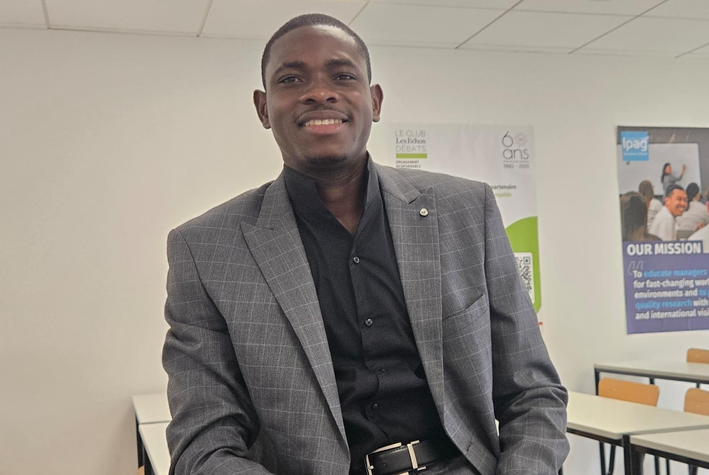

Développement web
HTML, CSS, JavaScript, PHP, WordPress, WooCommerce, intégration responsive et personnalisation de thèmes.
WordPress • SEO technique • Analytics
Stagiaire développeur web chez MASER ENGINEERING sur un projet de refonte WordPress corporate. Je travaille sur l’intégration responsive, la performance web, la maintenance, le SEO technique et le suivi Analytics.

Profil
Je conçois et améliore des sites WordPress avec une logique claire : structure propre, expérience utilisateur fluide, performance mobile, SEO technique et suivi des résultats.
HTML, CSS, JavaScript, PHP, WordPress, WooCommerce, intégration responsive et personnalisation de thèmes.
Structure Hn, maillage interne, indexation, Core Web Vitals, optimisation mobile et amélioration continue.
GA4, Google Tag Manager, Search Console, Google Ads, SEMrush et analyse du comportement utilisateur.
Domaines
Projets web
.jpeg)

Réalisations web
Analytics & SEO


Contact
Disponible pour un poste en développement web, WordPress, performance web et SEO technique à partir d’août 2026.